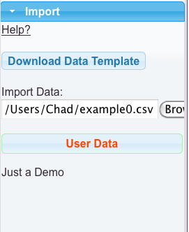

Import Data Files
Importing data currently works by reading in a CSV (comma separated value) text file. You can make the CSV files with anything. Most people would probably use Excel or another spreadsheet program to make them. RiboVision has two primary data types, nucleotide level data, and "interactions", which don't have to be real physical interactions. For our purposes here, interaction just means a line drawn between two residues. The Inter-Nucleotide Contacts section represents real physical interactions but your data doesn't need to be of this kind.
Import Data Files (Interaction Data)
We currently support one set of data, to make one layer, per file. Since we only support one interactions layer, all data automatically goes there. Lines can be drawn between any two nucleotides. It is possible to color each line individually, if desired. See RiboVision Coloring for details on colors. Additionally, you can vary line thickness and opacity.
Import Data Syntax
Import data feature uses the same syntax as selections. We recommend you always use the prefixed syntax, because it is clearer. However, each interactions needs to be on its own line. The first nucleotide goes into column Residue_i, the second into column Residue_j. Data about the type of the line can optionally be included in the column Int_Type. The Int_Type can be plain text or HTML if you want that effect. This data will show up in the ResidueTip. Opacity and LineWidth can also be included if desired. Otherwise, the default opacity is 0.5, and the default line width is 0.75.
Example
| Residue_i | Residue_j | Int_Type | ColorCol | Opacity | LineWidth |
|---|---|---|---|---|---|
| 23S:1 | 23S:1000 | Class A | Red | 0.2 | .5 |
| 23S:2 | 23S:1001 | Type B | Green | 0.4 | .7 |
| 23S:3 | 23S:1002 | Long Range | Blue | 0.6 | 1.2 |
| 23S:4 | 23S:1003 | <b>Bold</b> | Brown | 0.8 | 1.5 |
| 23S:5 | 23S:1004 | <span style="color:red">Red</span> | Black | 1 | 2 |
Here is the csv file for this example. Below, is this file mapped onto E. coli LSU 3D-based Structure.

Import Data Mapping:
For interactions, data is instantly mapped onto the Interactions layer. It is recommended for now to keep interaction data and nucleotide data in separate CSV files, but please load both to the same molecule in RiboVision if you like.
